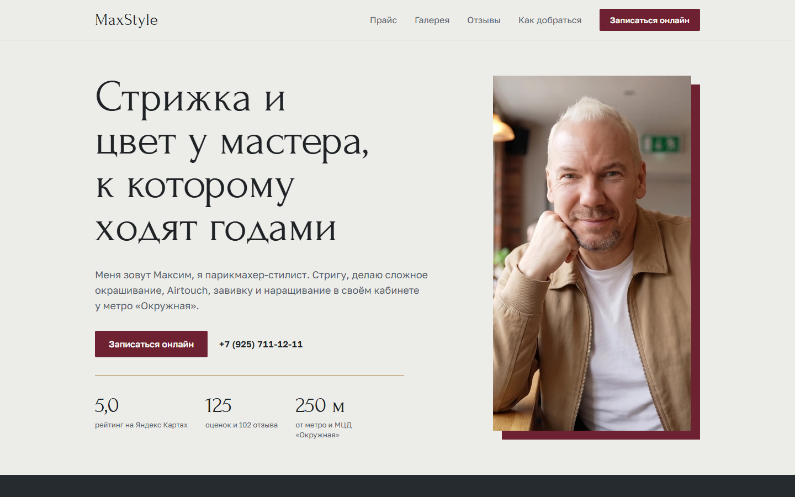

Сайт, Москва
Лендинг студии MaxStyle
Одностраничник парикмахера-стилиста: услуги, прайс, галерея работ, онлайн-запись и отзывы. Сделан с нуля и работает на бесплатном хостинге.
- 0 ₽
- в месяц за хостинг
- 24/7
- онлайн-запись прямо с сайта
Делаю лендинги и настраиваю автоматизацию в n8n с AI-агентами для малого бизнеса и экспертов. Сначала нахожу место, где у вас теряется время, потом убираю именно его.
Разбор - 1 час в Telegram или по видеосвязи. Скажу, что автоматизировать, сколько это стоит и окупится ли.

Сайт может быть красивым, но если заявка час лежит на почте, клиент уже ушёл к тому, кто ответил быстрее. Поэтому я делаю и то, и другое: страницу, которая приводит людей, и автоматизацию, которая не даёт их потерять.
Меня зовут Максим Смоляков. Всё, что предлагаю клиентам, сначала запускаю у себя: свой сайт, свой контент-конвейер, свои боты. Про то, как это устроено, рассказываю на YouTube-канале «Баг в прошивке».
Смотреть на YouTubeКанал «Баг в прошивке»: нейросети и автоматизация без магииСобственные проекты - на них я проверяю всё, прежде чем предлагать клиентам.

Сайт, Москва
Одностраничник парикмахера-стилиста: услуги, прайс, галерея работ, онлайн-запись и отзывы. Сделан с нуля и работает на бесплатном хостинге.
Автоматизация
Темы и готовые посты собираются в Google Таблицу с расписанием, бот публикует их в оба канала, а отчёт о работе приходит на почту и в Telegram.
Процесс
Разложили подготовку постов на этапы, собрали таблицу замеров и поставили цель. Автоматизация в n8n - только после ручного эталона. Итог добавлю сюда после замеров.
Цену и срок называю до старта, после бесплатного разбора задачи.
Одностраничный сайт под одну услугу: тексты, дизайн, форма заявки, адаптация под телефон, публикация на вашем домене.
Подойдёт, если сейчас клиенты приходят только из соцсетей и сарафана.
Заявки, запись, напоминания, отчёты или посты по расписанию. Настраиваю в n8n, подключаю AI-агента, если он нужен, и показываю, как всем пользоваться.
Подойдёт, если одна и та же рутина съедает у вас час-два каждый день.
Лендинг и сразу обработка заявок с него: таблица, уведомление вам в Telegram, автоответ клиенту. Схема как на первом экране.
Подойдёт, если хотите запустить новое направление и не собирать всё по частям.
Смотрим ваш процесс, находим узкое место, я называю цену и срок. Если автоматизация не окупится, так и скажу.
Первый месяц после запуска сопровождаю бесплатно: если что-то перестало работать, чиню. Дальше - подписка на сопровождение за 5 000 ₽ в месяц.
Если автоматизировать процесс, который ещё не отлажен, лишняя работа просто начнёт происходить быстрее. Поэтому идём по шагам.
Выписываем все этапы: от того, как клиент нашёл вас, до оплаты. Два дня вы записываете, сколько минут уходит на каждый этап.
По замерам, а не по ощущениям. Обычно это одно место, где копится большая часть потерь.
Прогоняем несколько реальных случаев по новым правилам. Так видно, что именно отдавать машине.
Цель ставим цифрой заранее. Например, минус 30% времени на этапе за 14 дней. Через две недели сравниваем с замером.
Нет. Всё настраиваю я, а вам показываю, как пользоваться, и оставляю короткую инструкцию. Если вы умеете пользоваться Telegram и таблицей, этого хватит.
Первый месяц после запуска чиню бесплатно. Дальше - подписка на сопровождение за 5 000 ₽ в месяц: слежу, чтобы всё работало, и вношу небольшие правки. Уведомление об ошибке настраиваю так, чтобы оно приходило и мне.
Вам. Домен, хостинг, таблицы и аккаунт n8n оформляются на вас, доступы передаю после сдачи. Если захотите уйти к другому подрядчику, всё останется у вас.
Учитываю 152-ФЗ: данные клиентов не отправляю в зарубежные нейросети, храню их в ваших российских сервисах, а на этапе настройки работаю с тестовыми данными.
Сайт на простом хостинге - от 0 до нескольких сотен рублей в месяц плюс домен. Автоматизация - от 0 ₽, если n8n стоит на вашем сервере, до пары тысяч рублей за облако и нейросети. Точную сумму называю на разборе.